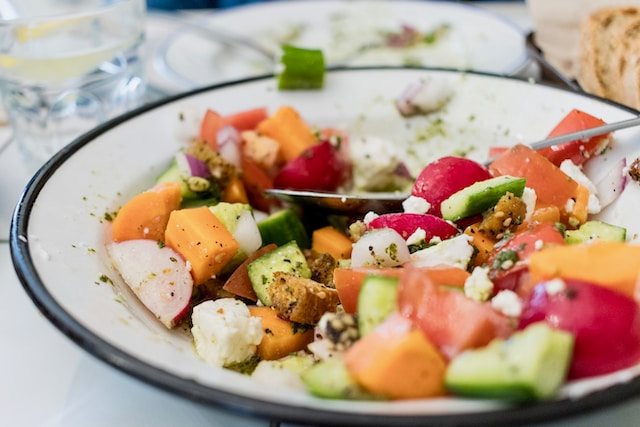

Salmon and Kale Orzo Salad

Flakes of smoked salmon adorn this gorgeous kale, pine nut, and orzo pasta salad. Ricotta salata
or
feta
cheese will add a lovely creaminess, and the addition of dried cherries give a burst of sweetness
for a
delicious combination of flavors.
- 1 pound uncooked orzo pasta
- 3 tablespoons extra-virgin olive oil
- 2 cups kale leaves, stems removed
- ¼ cup extra-virgin olive oil
- ½ cup dried cherries
- ¼ cup toasted pine nuts
- 3 tablespoons lemon juice
- 1 ½ teaspoons salt
- 1 teaspoon ground black pepper
- 4 ounces smoked salmon, flaked
- 3 ounces ricotta salata
Directions
step 1
Bring a large pot of salted water to a boil over high heat. Add orzo and cook until
tender, 8 to 10 minutes.
Drain and transfer onto a large baking sheet. Drizzle orzo with 3
tablespoons
olive oil, toss,
spread out, and set aside to cool, about 30 minutes.
step 2
Once the orzo is cool, transfer to a large serving bowl. Set aside.
step 3
Bring a large pot of salted water to a boil over high heat.
Blanch kale in the boiling water for about 30 seconds.
Drain off water from kale and submerge in a
bowl of ice water. Drain and blot dry.
step 4
Add kale to orzo along with 1/4 cup olive oil, dried cherries, pine nuts, lemon juice,
salt, and pepper.
Toss gently to combine. Top with flaked salmon. Shave ricotta salata cheese on
top and
serve immediately.